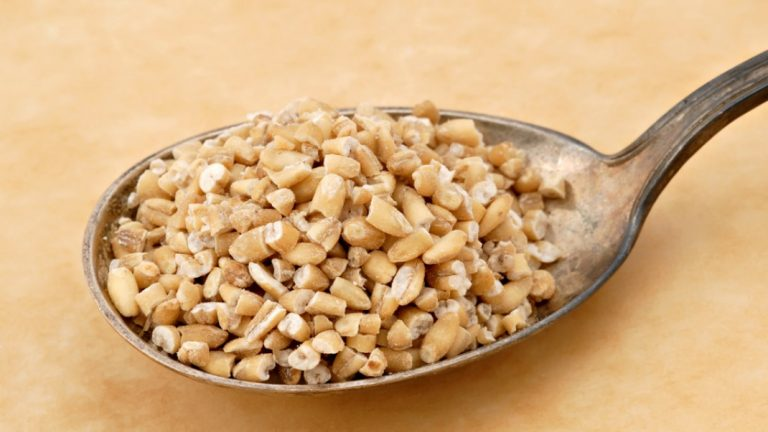
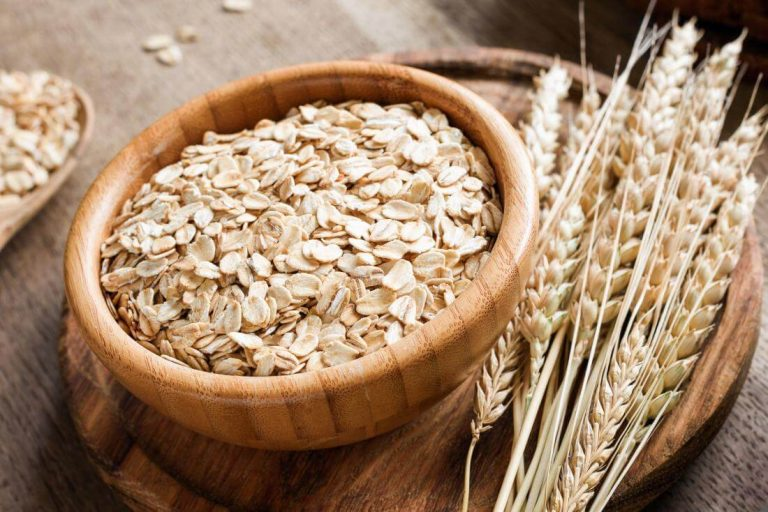
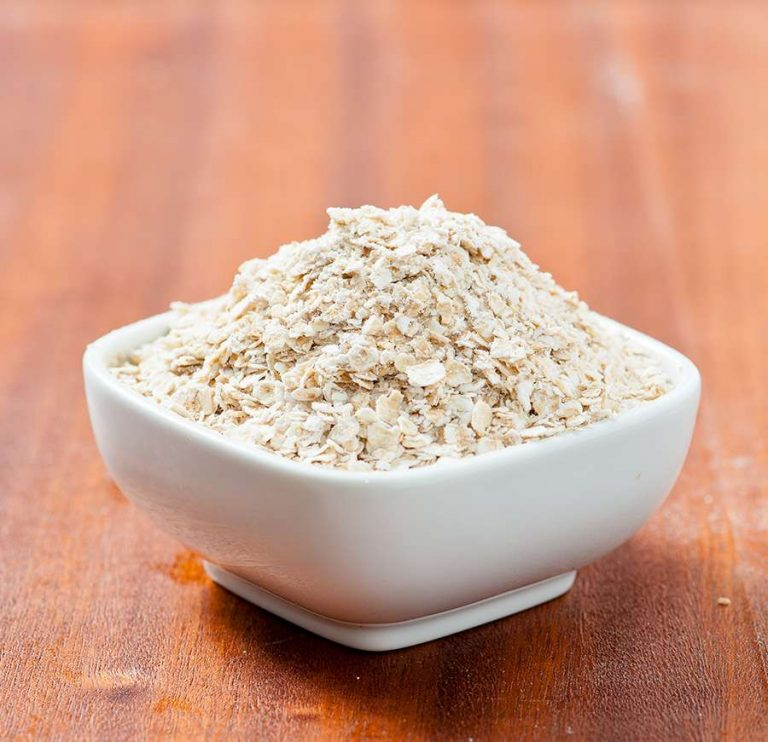
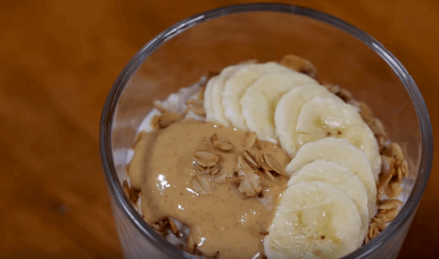
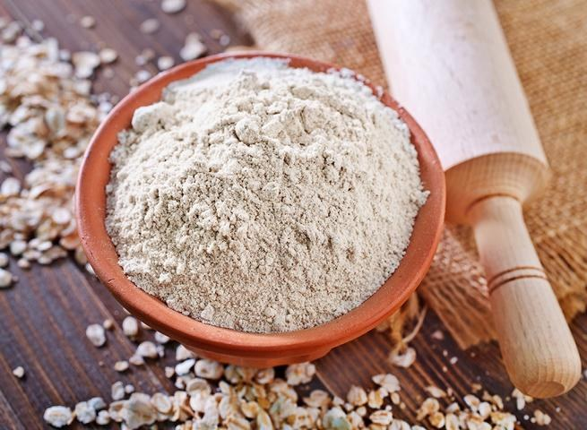

Yến mạch là một loại ngũ cốc, thường được trồng ở những vùng khí hậu ôn đới mát mẻ. Cây khi thu hoạch thường đạt chiều cao 1,5m. Yến mạch có một số đặc điểm khá giống với lúa mạch nhưng chúng chỉ có thể phát triển trên đất có nhiều cát, độ phì nhiêu thấp và có tính axit cao. So với các loại ngũ cốc khác, yến mạch không chứa gluten, ít tinh bột, giàu chất xơ, các loại vitamin và khoáng chất. Thích hợp dùng cho cả người lớn và bé ăn dặm.
Yến mạch khi ăn có mùi thơm nhẹ, vị hơi ngọt. Thường được dùng làm thực phẩm chế biến thức ăn, nguyên liệu làm đẹp và giảm cân. Yến mạch sau khi thu hoạch được sơ chế thành 4 loại. Khi bạn chưa nắm rõ yến mạch là gì hay có bao nhiêu loại yến mạch thì đây sẽ là câu trả lời thỏa đáng.
Yến mạch sau khi thu hoạch được chế biến thành nhiều dạng khác nhau tùy theo nhu cầu sử dụng của người dùng. Khi đã có những thông tin về yến mạch là gì thì bạn cũng cần phải biết có bao nhiêu dạng yến mạch.
Loại này được cắt nhỏ từ hạt yến mạch nguyên hạt. Giúp tiết kiệm thời gian nấu, bạn chỉ cần 30 phút là có thể dùng được. Yến mạch chứa lượng lớn chất xơ, chất chống oxy hóa. Vì vậy, chúng đặc biệt thích hợp cho những người bị táo bón kéo dài hay những người bị tiểu đường.

Loại yến mạch này được làm từ hạt yến mạch nguyên hạt đã hấp chín, sau đó đem cán dẹt. Tuy nhiên, khi chế biến làm món ăn, bạn vẫn cần phải nấu chín chúng trong 15 phút để dễ ăn hơn.

Cũng như loại yến mạch cán dẹt, yến mạch cán mỏng cũng có cách sơ chế tương tự. Điểm khác biệt duy nhất là yến mạch cán mỏng được cán nhỏ hơn, mỏng hơn. Vì vậy, chúng có thời gian nấu nhanh hơn. Bạn chỉ cần đổ nước sôi vào và đợi khoảng 1 phút là có thể dùng ngay.

Loại yến mạch này thường được nhiều người sử dụng thay cho bữa sáng. Bạn có thể cho thêm bơ đậu phộng, bơ điều, sữa tươi hay trái cây để món ăn thêm hấp dẫn.

Loại yến mạch này được nghiền mịn từ yến mạch cán mỏng. Và thường được dùng làm bột cho bé ăn dặm hay làm nguyên liệu đắp mặt nạ có tác dụng giảm mụn, trắng da, làm chậm quá trình lão hóa da.

Tại các nước phương Tây, yến mạch rất được ưa chuộng, được dùng làm thực phẩm cho cả bữa sáng và tối. Yến mạch là nguồn thực phẩm cực kì lành mạnh và bổ dưỡng cho cơ thể. Tại nước ta, yến mạch chủ yếu được nhập khẩu từ các nước như Mỹ, Úc, Pháp,… Tuy nhiên, chúng còn ít phổ biến tại nước ta nên nhiều người thường phân vân không biết yến mạch là gì.
Hy vọng với bài viết trên đã giải đáp thắc mắc yến mạch là gì cho nhiều người. Nhanh tay vào bếp chế biến những món ăn ngon với yến mạch và cùng thưởng thức, bổ sung năng lượng cho ngày mới nhé cả nhà.